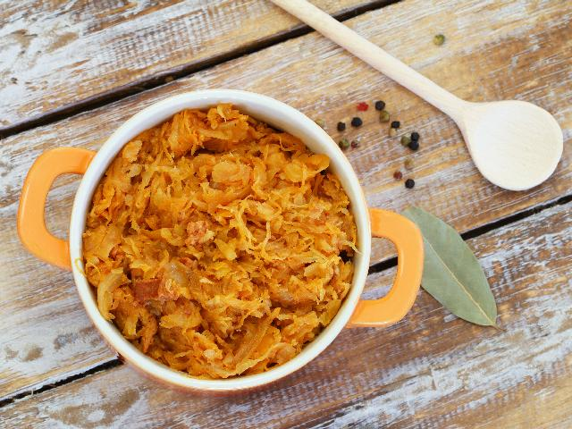

NAJLEPSZY BIGOS - PRZEPIS
Przepis na najlepszy bigos
staropolski. Przygotowuje się go z kiszonej i białej kapusty. Zawiera mięso,
kiełbasę, boczek, grzyby, śliwki i czerwone wino. Powinien być długo gotowany,
a następnie odgrzewany. Wtedy jest najsmaczniejszy i aromatyczny. Palce
lizać.
Najważniejsza myśl to: W garnku trzeba dobrze zamieszać, tak jak w życiu.
~Robert Makłowicz
SKŁADNIKI:
- 0,5kg świeżej, białej kapusty
- 0,5kg kiszonej kapusty
- 300g mięsa wieprzowego
- 40g suszonych grzybów
- 200g kiełbasy
- 150g boczku
- 1 cebula
- 100g suszonych, wędzonych śliwek
- 1 szklanka wytrawnego, czerwonego wina
- 2 ziarna ziela angielskiego
- 5 ziaren pieprzu czarnego
- 2 liście laurowe
- 2 nasiona jałowca
- 2 goździki
- sól
- olej do smażenia

PRZYGOTOWANIE:
- Grzyby wsypać do niedużego garnka i zalać 500ml zimnej wody. Pozostawić na
parę godzin, a najlepiej na całą noc.
- Namoczone grzyby ugotować w tej samej
wodzie, w której się moczyły, aż będą miękkie. (Czas gotowania wynosi ok. 30
minut). Grzyby osączyć i pokroić w paski. Wywar z grzybów należy zachować!
- Kapustę kiszoną wypłukać ( ale tylko, jeśli jest bardzo kwaśna), osączyć,
pokroić drobno i przełożyć do garnka. Zalać małą ilością wrzącej wody (tyle, aby
woda pokryła kapustę) i gotować do miękkości pod przykryciem (ok. 1 godziny).
- Kapustę białą oczyścić z zewnętrznych liści, poszatkować, zalać małą ilością
wrzącej wody (tyle, aby woda pokryła kapustę). Posolić 1 łyżeczką soli i gotować
do miękkości (ok. 30 minut).
- Ugotowane kapusty odcedzić i połączyć w jednym
garnku. Dodać pokrojone grzyby i wywar grzybny oraz przyprawy: ziele angielskie,
pieprz, liście laurowe, nasiona jałowca i goździki.
- Mięso pokroić w kostkę i podsmażyć na oleju na złoty kolor. Posolić.
- Osobno usmażyć pokrojoną w
kostkę cebulę z pokrojonym w kostkę boczkiem i kiełbasą. (Kiełbasę obrać ze
skóry). Dodać do kapusty razem z mięsem. Dodać pokrojone w paski śliwki. Podlać
winem. Garnek przykryć, pozostawiając małą szczelinę i gotować co najmniej 1
godzinę. Bigos po ugotowaniu przyprawić ewentualnie do smaku solą i pieprzem,
pozostawić do ostygnięcia, a następnie odstawić w chłodne miejsce.
- Przez kolejne 2- 3 dni bigos należy zagotować, pogotować przez parę minut, jeśli
byłoby za dużo płynu to go odparować i ponownie schłodzić. Bigos z czasem
przechodzi smakiem i nabiera aromatu. Na trzeci dzień bigos jest gotowy do
spożycia. Można go również zamrozić lub gorący przełożyć do słoików, zakręcić,
pozostawić do ostygnięcia, wstawić do lodówki i spożyć do 2 tygodni.
PODSUMOWANIE PRZEPISU:
| Kuchnia: |
Polska |
| Porcje: |
około 3 |
| Przygotowanie: |
około 4 dni |
| Trudność: |
łatwe |
| Koszt: |
niski |
INFORMACJE O ALERGENACH:
- Kapusta
- Alergeny owoców i warzyw mogą być zniszczone przez gotowanie. Spożywane owoce i warzywa poddane obróbce termicznej nie wywołują lub wywołują łagodniejsze objawy uczulenia.
- Alkohol(wino)
- Bardzo ciężkie przypadki nadwrażliwości na alkohol, skutkującej bezpośrednim zagrożeniem ludzkiego życia, występują ekstremalnie rzadko.
Newsletter:
Czy wciąż jesteś głodny i szukasz kolejnych wrażeń kulinarnych? Zasubskrybuj, aby nic Cię nie ominęło
Autorka strony:
Katarzyna Palichleb
Beverly Hills, 90210